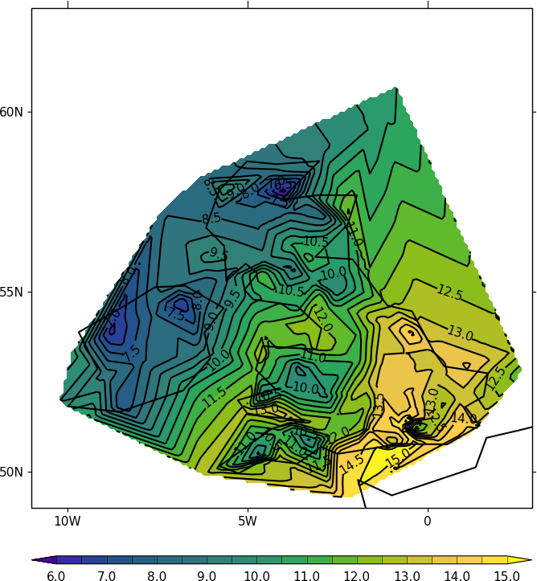
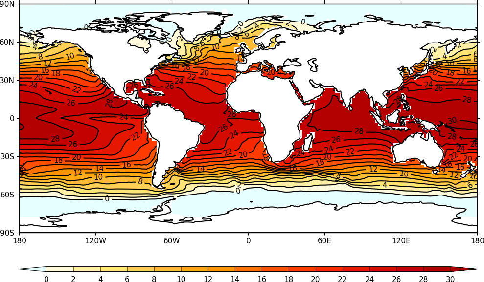

Irregular grid plots¶
There are various methods of contouring irregular data. The method used below is to regrid the data to be on a regular longitude latitude grid using the scipy interpolate package griddata function.
Tricontourf and tricontour can also be used but these produce errors on an Orca2 tripolar grid. The filled contours are improperly filled, the contour lines sometimes go in a straight line across the plot and contour line labelling produces an error.
Example 24 - irregular grid plot¶
Here we read in and contour temperature from meteorological stations around the British Isles.
{kind=link}
import cf
import cfplot as cfp
import numpy as np
from scipy.interpolate import griddata
#Arrays for data
lons=[]
lats=[]
pressure=[]
temp=[]
#Read data
f = open('cfplot_data/synop_data.txt')
lines = f.readlines()
for line in lines:
mysplit=line.split()
lons=np.append(lons, float(mysplit[1]))
lats=np.append(lats, float(mysplit[2]))
pressure=np.append(pressure, float(mysplit[3]))
temp=np.append(temp, float(mysplit[4]))
#Linearly interpolate data to a regular grid
xpts=np.arange(140)*0.1-11.0
ypts=np.arange(140)*0.1+49.0
# Expand data into 2D values
lons_new, lats_new = np.meshgrid(xpts, ypts)
# Regrid to the new regular grid
temp_new = griddata((lons, lats), temp, (lons_new, lats_new), method='linear')
cfp.cscale('parula')
cfp.con(x=lons_new, y=lats_new, f=temp_new, colorbar_label_skip=2, ptype=1)
Example 25 - irregular grid plot - Check of data values¶
To see if this plot is correct we can add some extra code to that above to plot the station locations and values at that point. The decimal point is roughly where the data point is located.
import cartopy.crs as ccrs
cfp.gopen()
cfp.con(x=lons_new, y=lats_new, f=temp_new, colorbar_label_skip=2, ptype=1)
for i in np.arange(len(lines)):
cfp.plotvars.mymap.text(float(lons[i]), float(lats[i]), str(temp[i]), \
horizontalalignment='center',verticalalignment='center', \
transform=ccrs.PlateCarree())
cfp.gclose()
{kind=link}
Example 26 - Orca2 grid¶
{kind=link}
import cf
import cfplot as cfp
import numpy as np
from netCDF4 import Dataset as ncfile
from matplotlib.mlab import griddata
#Get an Orca grid and flatten the arrays
nc = ncfile('cfplot_data/orca2.nc')
lons=np.array(nc.variables['longitude'])
lats=np.array(nc.variables['latitude'])
temp=np.array(nc.variables['sst'])
lons=lons.flatten()
lats=lats.flatten()
temp=temp.flatten()
#Add wrap around at both longitude limits
pts=np.squeeze(np.where(lons < -150))
lons=np.append(lons, lons[pts]+360)
lats=np.append(lats, lats[pts])
temp=np.append(temp, temp[pts])
pts=np.squeeze(np.where(lons > 150))
lons=np.append(lons, lons[pts]-360)
lats=np.append(lats, lats[pts])
temp=np.append(temp, temp[pts])
# Make the new grid
lons_new=np.arange(181*8)*0.25-180.0
lats_new=np.arange(91*8)*0.25-90.0
lons_1d=np.arange(181*8)*0.25-180.0
lats_1d=np.arange(91*8)*0.25-90.0
lons_2d, lats_2d = np.meshgrid(lons_1d, lats_1d)
# Interpolate Orca2 data onto the new regular grid
temp_new = griddata((lons, lats), temp, (lons_2d, lats_2d), method='linear')
cfp.con(x=lons_2d, y=lats_2d, f=temp_new, ptype=1)